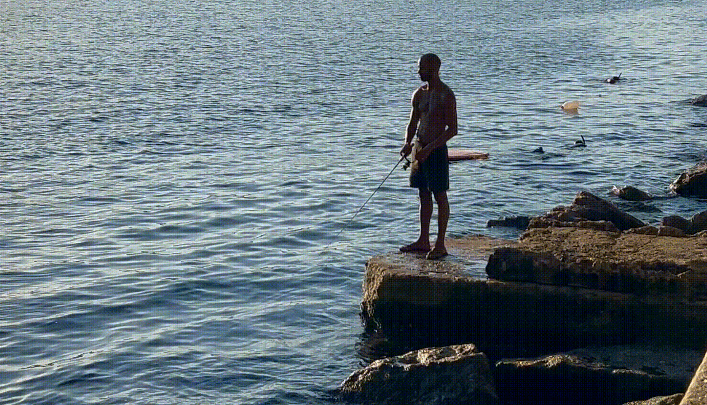

a forma do vento
Os antigos Tupinambás dizem que, no começo dos tempos, não havia vento — o ar era parado, pesado, e a vida crescia lentamente. Foi então que Anhangá, o espírito guardião das matas, ouviu o lamento das árvores e dos rios que queriam dançar. Com um assobio poderoso, ele libertou os quatro ventos dos cantos do mundo, escondidos nas cavernas do céu. O vento norte trouxe calor, o sul trouxe frio, o leste acordou o sol, e o oeste espalhou as sementes. Desde então, os ventos sopram com alma própria — uns cantam, outros uivam, mas todos carregam histórias e mensagens dos deuses para quem sabe ouvir.

de novo